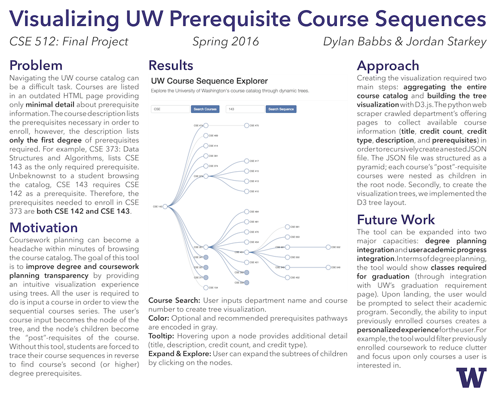

Dylan Babbs & Jordan Starkey
CSE 512: Final Project (Spring 2016) Computer Science & Engineering University of Washington
View the Project on GitHub CSE512-16S/fp-dbabbs-jordanstarkey95
Navigating the UW course catalog can be a difficult task -- especially when dealing with prerequisites. The course description lists the prerequisites necessary in order to enroll in a specific course, however, the description lists only the first degree of prerequisites required. For example, CSE 373: Data Structures and Algorithms, lists CSE 143 as the only required prerequisite. Unbeknownst to a student browsing the catalog, CSE 143 requires CSE 142 as a prerequisite. Therefore, the prerequisites needed to enroll in CSE 373 are both CSE 142 and CSE 143.
Coursework planning can become a headache within minutes of browsing the catalog. The goal of this tool is to improve degree and coursework planning transparency by providing an intuitive visualization experience using trees. All the user is required to do is input a course in order to explore courses series. The user’s course input becomes the node of the tree, and the node’s children become the “post”-requisites of the course. Without this tool, students are forced to backwards trace their course sequences to find course’s second (or higher) degree prerequisites.
View our final paper here.
View the project's poster for the Final Poster Presentation here.
View the live visualization here or download the Github repository and run locally with -m SimpleHTTPServer 8888 .
Feel free to contact us at dbabbs (at) uw.edu or jds56 (at) uw.edu with any questions.